Contexte
Objectif
Mettre en place les accès distants de l'administrateur, configurer l'authentification à double facteur (2FA TOTP) sur le pare-feu Stormshield SNS, gérer les flux réseau, déployer la plateforme GLPI avec l'agent d'inventaire, tester les remontées d'équipements et les tickets d'incidents, puis rédiger une procédure utilisateur.
Domaine : gc-cicar.es · GLPI : 192.168.57.25 · SNS : 192.168.53.254
🎯 Compétences E4
Vue d'ensemble
Authentification 2FA sur le SNS Stormshield
Configuration de l'annuaire LDAP et de la politique d'authentification
Liaison du pare-feu SNS à l'annuaire Active Directory du domaine gc-cicar.es pour centraliser l'authentification, puis création de la politique d'authentification associée.
gc-cicar.esSRV-AD-GC — Port : ldap — Base DN : dc=gc-cicar,dc=es — Identifiant : cn=Administrateur,cn=usersAdministrateur@gc-cicar.es / LAN — Méthode : LDAP — Action : Autoriser — Méthode par défaut : LDAP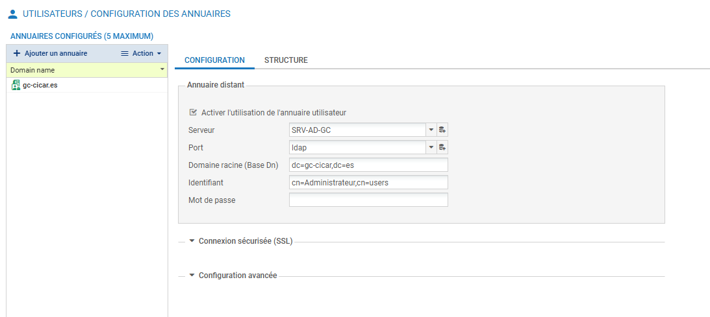
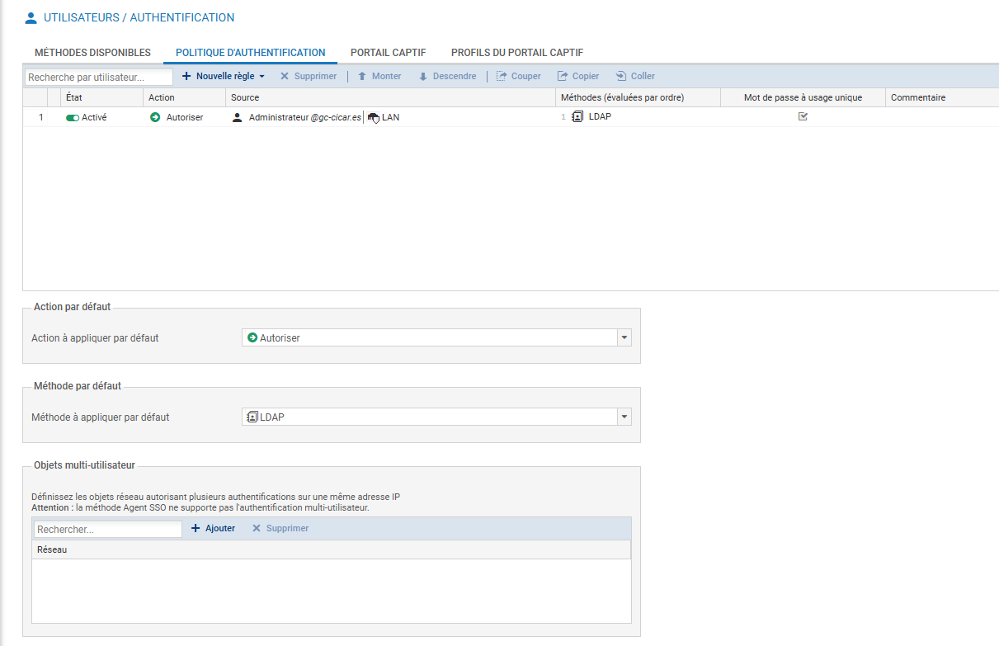
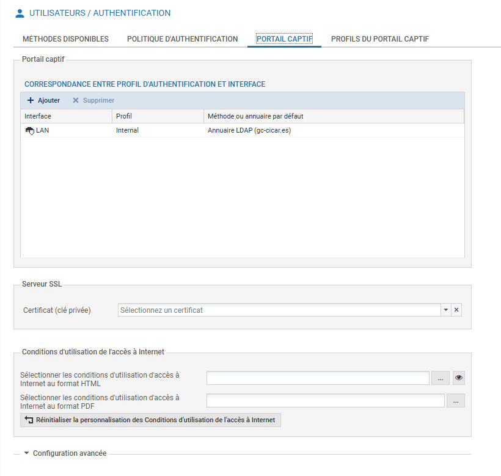
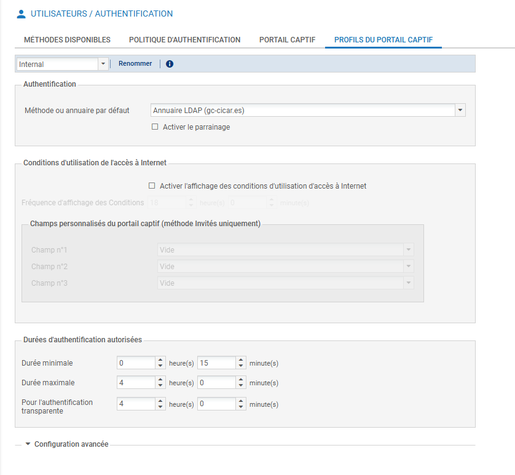
Activation de la méthode TOTP (2FA SNS)
Activation et configuration de la méthode TOTP (2FA SNS) dans les méthodes disponibles du SNS, applicable au portail captif et à l'interface web d'administration.
Stormshield Network Security - gc-cicar — Durée de vie : 30s — Taille : 6 chiffres — Algorithme : SHA1 — Codes valides avant/après : 3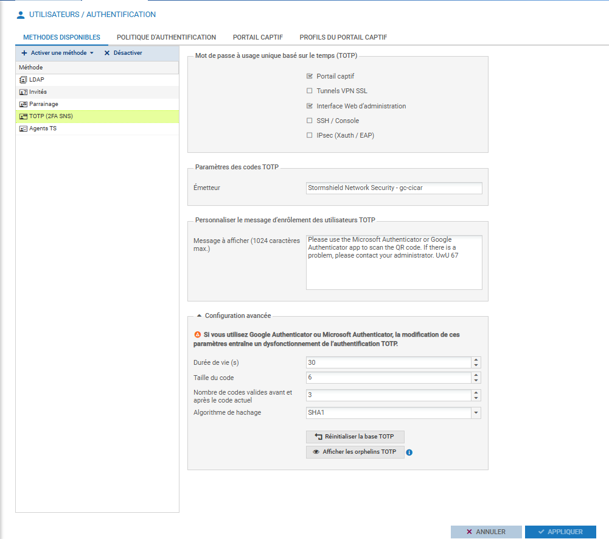
Enrôlement TOTP via Microsoft Authenticator (Chrome)
Enrôlement du compte Administrateur@gc-cicar.es dans le système TOTP via l'extension Authenticator sur Chrome, en scannant le QR code affiché par le SNS.
authenticator.cc — 8 000 000 utilisateurs — déjà installée : bouton "Supprimer de Chrome"https://192.168.53.254/auth/ → saisir Administrateur@gc-cicar.es + mot de passe → durée : 4 heures → OK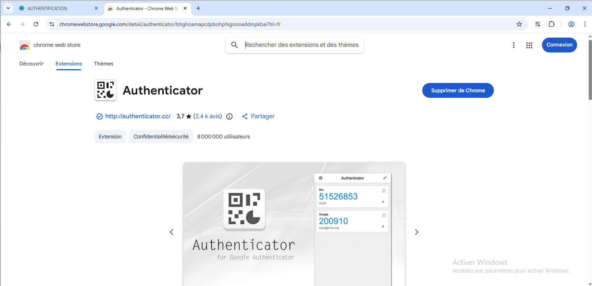
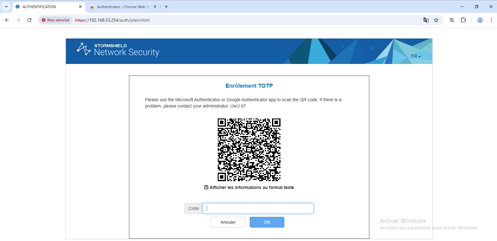
Test complet — Authentification 2FA réussie
Validation du flux complet d'authentification 2FA : l'interface SNS demande désormais le code TOTP à 6 chiffres en plus des identifiants. Test concluant sur le portail ET l'interface d'administration.
https://192.168.53.254/auth/ → nouveau champ "Code" apparu → code généré par l'extension (271434) → saisie → OKhttps://192.168.53.254/admin/admin.html → champ "Code 2FA" requis → code (897746) → accès accordé à la console Stormshield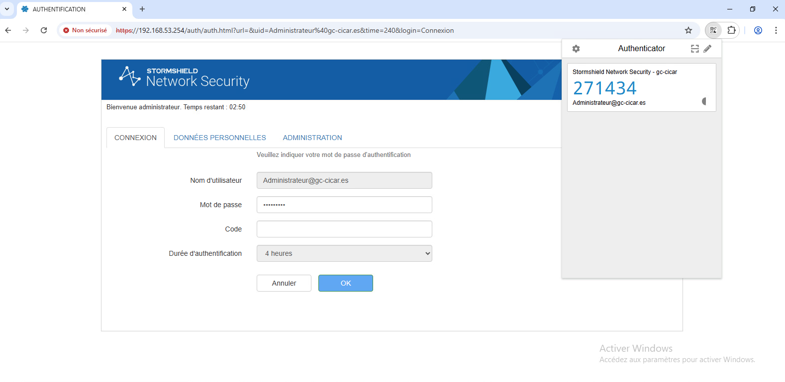
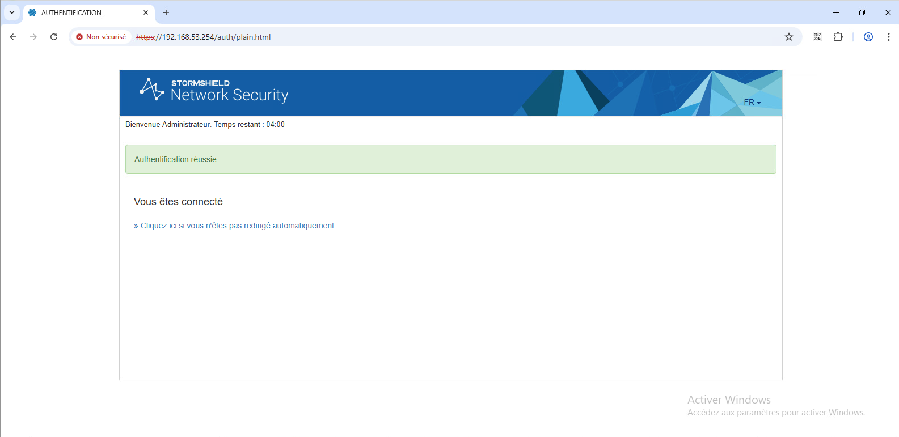
Accès distants de l'administrateur
MobaXterm — Configuration des sessions d'accès distants
Mise en place des accès distants administrateur via MobaXterm. Trois types de sessions ont été créés et sauvegardés : SSH vers les serveurs Linux, RDP vers les serveurs Windows, et Browser pour accéder aux interfaces web d'administration (SNS, GLPI…).
AD, Centreon, Debian HAProxy, Debian-GC2, Debian-GC3, Debian-Mail, ESX, SNS, Switch, TPLink Wifi, TrueNAS, Zimbra — chaque session est configurée avec le bon protocole et les bons identifiants.192.168.63.1 — Username : adminlocal — Port : 22 — Options : X11-Forwarding ☑, Compression ☑, SSH-browser type : SFTP protocol — Remote environment : Interactive shell192.168.53.10 — Username : Administrateur — Port : 3389 — Résolution : Fit to terminal — Redirect clipboard ☑ — Autoscale ☑ — Display settings bar ☑https://192.168.53.254/admin — Browser engine : Google Chrome (experimental) — Display top bar ☑ — Display address bar ☑ — Permet d'accéder à la console d'administration Stormshield directement depuis MobaXtermListe des sessions
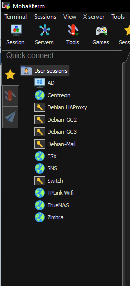
Session Browser — SNS
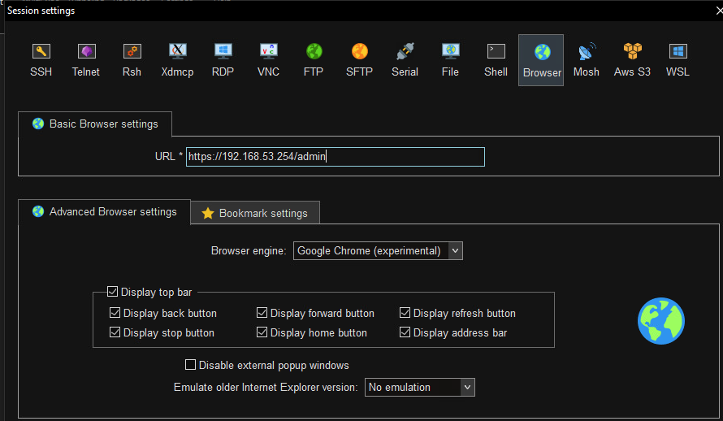
Session SSH
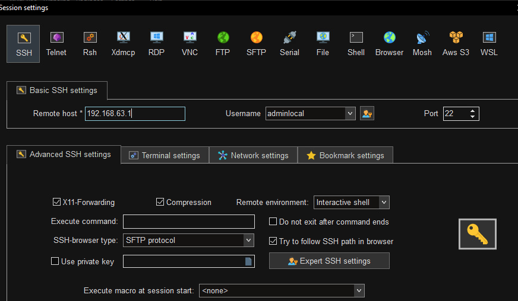
Session RDP — Windows
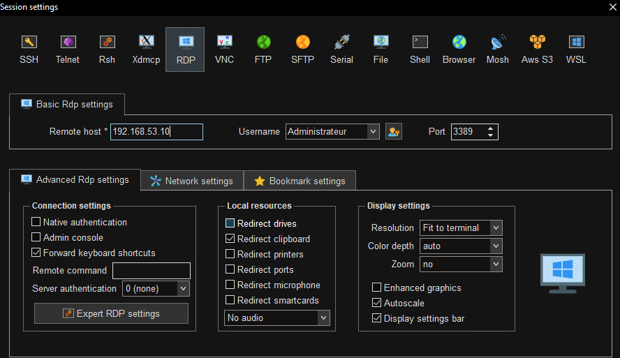
Installation de GLPI
Installation de GLPI en 6 étapes — Serveur 192.168.57.25
Installation complète de GLPI via l'assistant web. La base MariaDB glpi_npt était préexistante — l'assistant effectue la mise à jour de la structure vers la version 11.8.6.
localhost — Utilisateur SQL : Admin — Mot de passe renseigné → Continuerglpi_npt → Continuerglpi/glpi (admin), tech/tech (technicien), normal/normal, post-only/postonly — cliquer "Utiliser GLPI"Première connexion et tableau de bord GLPI
Connexion initiale à GLPI sur http://192.168.57.25/glpi/index.php avec le compte administrateur, puis découverte du tableau de bord avec l'inventaire déjà remonté.
glpi — Mot de passe : glpi — Source : Base interne GLPI → Se connecter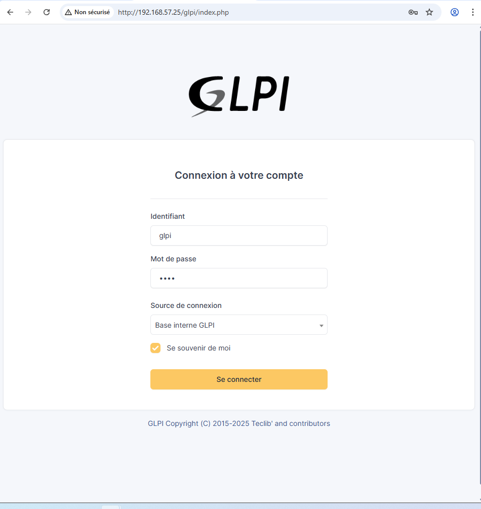
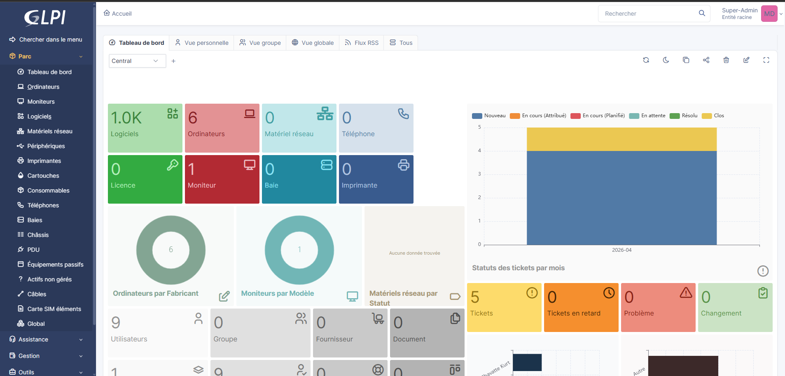
Déploiement de l'agent GLPI et remontées d'inventaire
GLPI Agent 1.15 — Installation sur les postes clients
Installation du GLPI Agent 1.15 sur les postes Windows. L'agent se connecte automatiquement au serveur GLPI sur http://192.168.57.25/glpi/front/inventory.php et remonte l'inventaire selon le planning configuré.
http://127.0.0.1:62354 → statut : "The current status is waiting" — prochain run : Thu Apr 2 11:57:40 2026 — Tâches : Inventory, RemoteInventoryC:\Programmes\GLPI-Agent\logs\glpi-agent.log — 2 Ko — modifié le 02/04/2026 11:17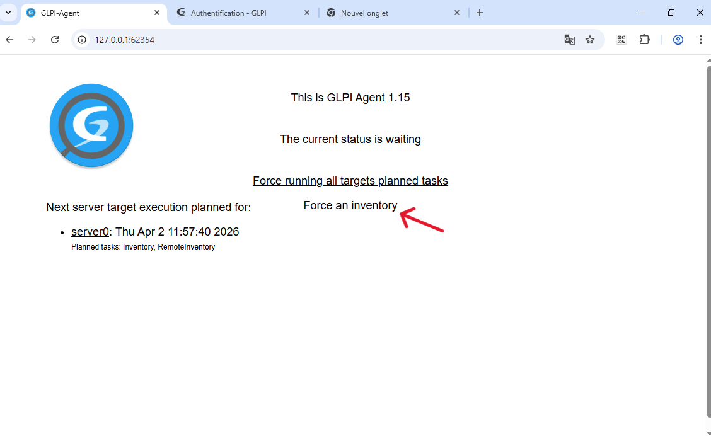
Analyse des logs — Remontée d'inventaire confirmée
Lecture du fichier glpi-agent.log confirmant que les inventaires sont bien transmis et acceptés par le serveur GLPI sur 192.168.57.25.
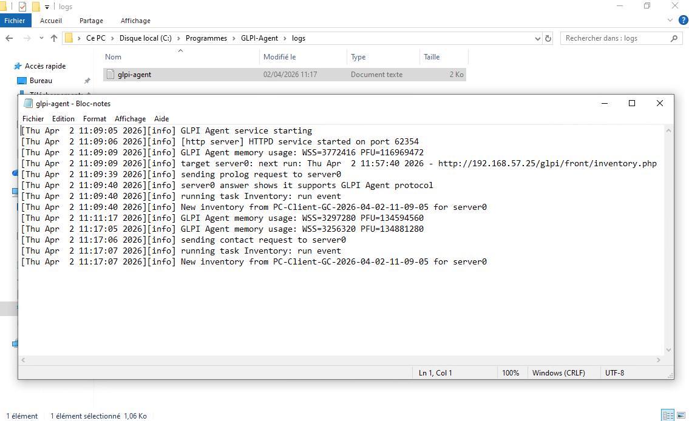
192.168.57.25/glpi. Le tableau de bord affiche 6 ordinateurs et plus de 1 000 logiciels inventoriés.Tests des tickets d'incidents 🔧 En cours
Cycle de vie complet d'un ticket helpdesk
Validation du cycle : création par un utilisateur → prise en charge technicien → résolution → clôture avec notification email.
📸 Captures d'écran à ajouter à la fin de la mission
Procédure utilisateur 🔧 En cours
Rédaction de la procédure helpdesk utilisateur
Rédaction d'un document de procédure illustré, à destination des utilisateurs finaux, pour créer et suivre leurs tickets d'incidents sur la plateforme GLPI.
📄 Procédure en cours de rédaction — sera intégrée ici à la fin de la mission.